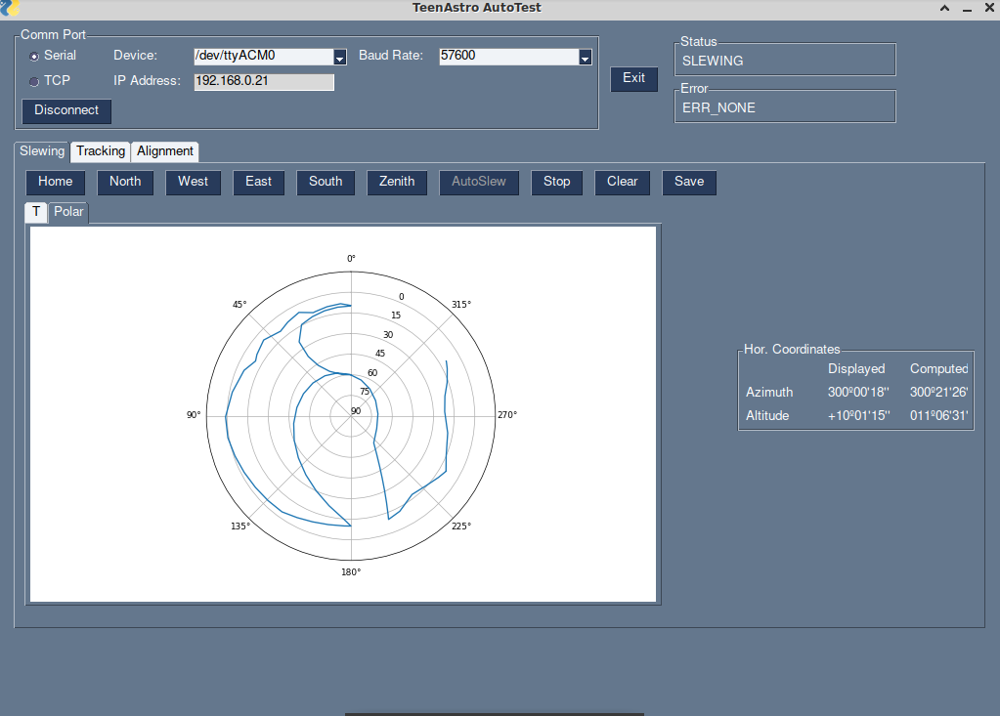
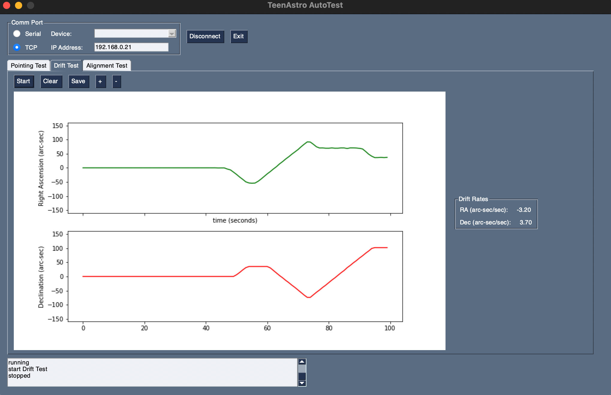
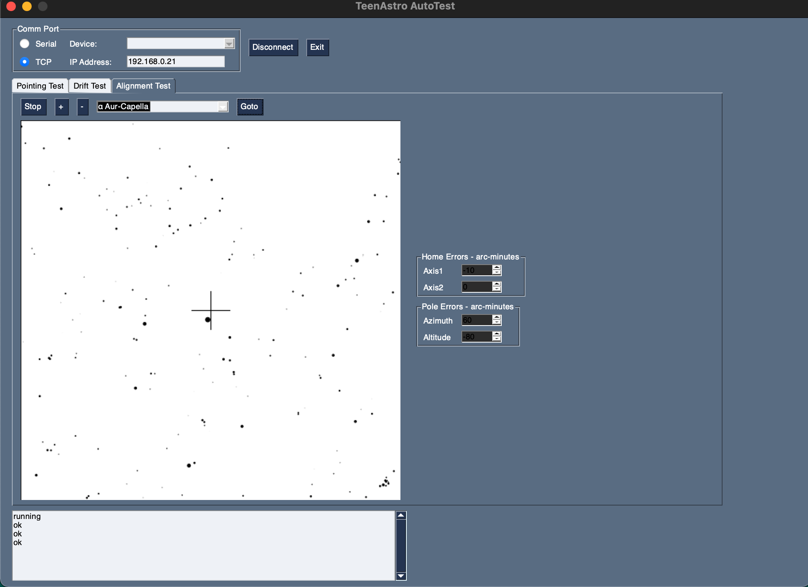

autoTest
autoTest allows testing a TeenAstro Main Unit without the mount, by counting steps reported during specified movements. The computer is connected to the Main Unit either through the serial USB port or through TCP/IP via the Smart Hand Controller.
It has 3 test options:
Pointing Accuracy Test

The mount points to a list of positions defined as alt-az pairs. The mount position is displayed on an altazimuth graph. At each position, the program compares Alt-Az computed from the RA / Dec reported by TeenAstro against values computed from the axis positions using Skyfield.
Drift Test

The mount is set to track any point in the sky. At regular intervals, the program reads the axis positions and computes the differences in RA and Dec since the test started. This can be used to verify slow movements like guiding and custom tracking. The + and - keys allow zooming in and out. The current drift averaged over the last 10 seconds is displayed on the right.
Alignment Test

The current TeenAstro position is plotted on top of a simple star map. A set of controls sets "home position" and "pole alignment" errors. This allows running the alignment routine in the hand controller, to view its effect on pointing accuracy.